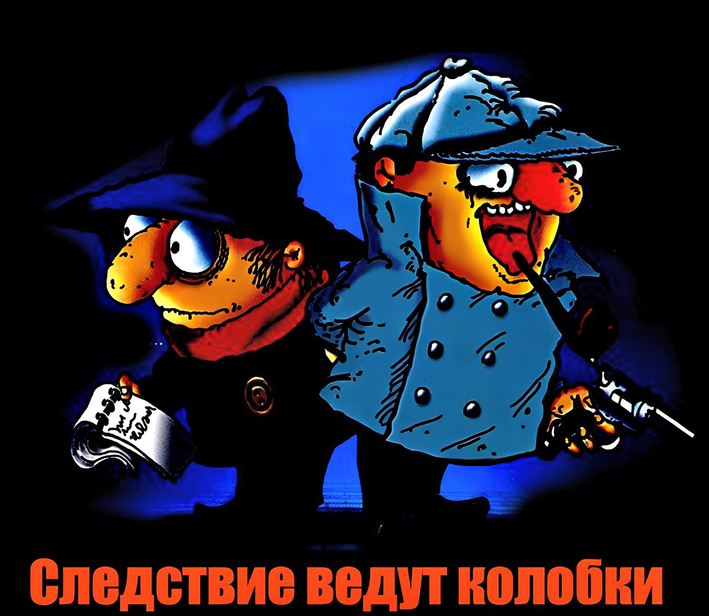

Колобок идет по следу - продолжение.
Эдуард Успенский
Следствие первое
КОЛОБОК ИДЕТ ПО СЛЕДУ
Однажды по радио в Москве передавали рекламу детского Краснопресненского парка. Диктор читал стихотворение:
Спеши сюда, не мешкай:
Здесь ослик есть
С тележкой,
Есть школа танцев в парке,
Кружок электросварки.
Здесь все, что
Людям надо:
Буфет, балет, эстрада,
Купальни для купанья,
И лодки для катанья.
Еще есть тир отменный,
Спортивный и военный.
И будьте в нашем тире
Как в собственной квартире.
На радость бабушек и дедов,
Здесь есть прокат
Велосипедов
И все радиослушатели, которые не выключили приемники, с удовольствием слушали. Одно сообщение было интереснее другого. Но особенно всех поразили такие строчки:
Там, где неведомые Д,
Есть неотложный ПДД.
Слушатели сразу задумались и стали спрашивать друг друга:
- Что это такое - "неведомое Д"? Не знаете? Жалко. А что такое - "неотложный ПДД"? Тоже не знаете? Тоже жалко.
Они звонили друг другу по телефону и выясняли этот загадочный вопрос. А все объяснялось очень просто. Неведомые Д - это Неведомые Дорожки. А неотложный ПДД - Неотложный Пункт Добрых Дел.
Да, в глубине парка на неведомых дорожках около фонтана стоял дом с вывеской:
НЕОТЛОЖНЫЙ ПУНКТ ДОБРЫХ ДЕЛ
Заведующий - Колобок.
Помощник заведующего - Булочкин.
Принимаются заявки на расследование пропаж, нарушений и небольших преступлений.
Разбираются ссоры и споры.
Телефон 217-218-219
Внутри дома, заложив руки за спину, нервно расхаживал сам Колобок, как небольших размеров тигр. Такой малогабаритный, игрушечный.
- Сегодня у нас будет много работы, - сказал Колобок. - Я это предвижу.
- Почему, товарищ начальник? - четко, по-военному, удивился Булочкин. Он был слегка военизирован - носил погончики на куртке и все делал строго по-армейски. - Есть какие-то неведомые причины?
- Потому что о нас только что по радио передавали. - И он с удовольствием повторил: - "Там, где неведомые Д, есть неотложный ПДД".
Только он это сказал, сразу зазвонил телефон.
- Слушаю! - сказал Колобок.
- Можно кого-нибудь из Колобоков? - спросил чей-то голос.
- Главный Колобок у аппарата.
- У нас в подъезде кто-то постоянно чертика рисует.
- Чем рисует?
- Всем рисует. Мелом рисует, углем рисует, стеклом царапает.
- На чем рисует?
- На всем рисует. На стенах рисует, на дверях рисует, на лифте царапает.
- Хорошо, - сказал Колобок. - Заказ принят. Принесите копию чертика. Отыщем преступного рисовальщика.
Только он положил трубку, вошел высокий гражданин очень элегантной внешности.
- Здравствуйте. Говорят, вы делаете чудеса.
- Стараемся, - скромно ответил Булочкин. - Служим делу. Которому служим.
- А что у вас? - спросил Колобок. - С чем вы пришли?
- Не можем сына оторвать от телевизора. Просто беда какая-то!
- Хорошо отрывали? - спросил Колобок. - Рыбками завлекали? На природу возили? К лыжному спорту приучали?
- Пробовали, - ответил гражданин. - Но все бесполезно. Он как загипнотизированный. Когда телевизор увидит - про рыбок, про лыжи, про все забывает. Вчера он на улице целый час стоял у витрины "Радиотоваров". "Увеличим поголовье кур" смотрел.
- Может, он хозяйственной птицей интересуется? - предположил Булочкин.
- Он "Спокойной ночи, малыши" интересуется. "Прогнозом погоды на завтра" интересуется. И даже циклом "Новый домостроительный комбинат - каждому городу" интересуется.
- Трудом воспитывали? - перебил гражданина Колобок. - Рабочее воспитание применяли?
- Применяли. Он картошку чистит без отрыва от телевизора. Полы моет тоже без отрыва от телевизора.
- Да, трудный случай! - задумался Колобок. Он снял с головы кожаную шляпу и вытер носовым платком лоб.
И тут у него на голове засверкала синяя милицейская лампа.
- И знаете, что интересно… - начал говорить посетитель. Но Булочкин остановил его:
- Когда он так сверкает, ничего говорить не надо. Начальник думает. Как перестанет сверкать - пожалуйста.
Как раз Колобок отсверкался.
- Вот что, - сказал он. - Сегодня к вам зайдет наш сотрудник в черной маске. Напугает всех пистолетом и совершит ограбление: вытащит из телевизора предохранители. Ваш телевизор умолкнет.
- Спасибо! - ответил элегантный папа. - Это прекрасный выход.
- Только проследите, пожалуйста, чтобы этот загипнотизированный ребенок нашего сотрудника утюгом не треснул.
- Не беспокойтесь, мы все утюги спрячем…
- И гантели, - добавил Булочкин.
- И гантели, - согласился элегантный папа. - Только…
- И сковородки, - перечислял Булочкин.
- И сковородки тоже. Только…
- И половники.
- И половники уберем, - пообещал родитель телемальчика. - Только выведите из строя телевизор. Мы будем очень счастливы.
Булочкин проводил папу до двери:
- И будильники спрячьте.
- Непременно. Одни шкафы останутся, - пообещал родитель телемальчика.
- Эх, - сказал Булочкин. - Нет у нас ни одного серьезного дела. Мой дедушка, парикмахер, часто говорил мне: "Будьте проще, и народ к вам потянется". Мы просты, мы очень просты, но никто не идет.
И тут послышался стук в дверь.
- Минутку! - сказал Колобок. Он сел за стол, взял в руки огромное увеличительное стекло и внимательно стал рассматривать какой-то окурок. - Войдите.
Булочкин распахнул дверь, и вошла пожилая гражданка молодежно-спортивного типа. С судками.
Колобок посмотрел на нее пронизывающими глазами.
- Вы очень взволнованы! - сказал он.
- Как вы догадались?
- У вас пальто наизнанку и на голове кашпо.
- Батюшки! - закричала гражданка, снимая с головы пластмассовую подставку для цветов. - Это действительно так. Я очень взволнована. У меня ребенок пропал, внук, дошкольник. Его украли.
- Дошкольник? - удивился Колобок. - Кому он нужен?
Мама-бабушка спортивного типа загремела кастрюлями:
- Как - кому? Такой дошкольник всем нужен. Это гениальный мальчик. Будущий ученый, скрипач! Будущий академик! Будущая гордость страны! Это же тысячи научных открытий.
- Значит, его похитили… - догадался Булочкин. - Утечка мозгов!
Бабушка ошарашенно посмотрела на Булочкина:
- Я и сама это подозревала. Его украли…
- Инопланетяне, - стал развивать свою мысль Булочкин. - Инопланетянщина. Летающие тарелки… Или еще хуже - летающие чайники.
Бабушка сразу согласилась с ним:
- Это дело рук летающих чайников. Смотрите, что я обнаружила на столе!
Она положила на стол перед Колобком записку. Он надел очки и стал похож уже не на мелкого тигра, а на уютную бабушку. Колобок прочитал, не отрываясь от увеличительного стекла:
"ПАЛАЖИТЕ ШЕСТ КАТЛЕТ ТРИ ПАКЕТ МАЛАКА И ОДИН ВИЛК НА БЕЛ. ПЛ. ОКОЛО НОВ. ГОР., А ТО ВАШЕМУ РИБЕНКУ БУДИТ ПЛ."
- Видите, - сказала пожилая спортсменка. - Записка написана с явным незнанием языка. Наши так плохо писать не могут. Моего Лешу украли инопланетяне.
- Шеф, а зачем им понадобился шест? - спросил Булочкин.
- Это не шест, а шесть котлет, - ответил Колобок. - А вот что такое - БЕЛ. ПЛ.?
- Я думаю, это белый плов. Еда такая, - догадался Булочкин.
- Бедный мой Леша! - сказала гостья, и из ее глаз выкатились две крупногабаритные слезы.
- Не плачьте, гражданка… Как ваша фамилия?
- Четверухина… - ответила посетительница. - Вера Антоновна.
- Не плачьте, гражданка Вера Антоновна, - сказал Колобок. - Смело идите домой. Мы отыщем вашего Лешу. Вы правильно сделали, что пришли к нам.
- А продукты? - Бабушка растерянно посмотрела на кастрюли.
Тут вмешался Булочкин:
- Продукты смело оставляйте нам. Мы их будем смело исследовать. Вы пришли к нам, мы вам поможем!
Грустная-прегрустная Вера Антоновна отправилась домой. А Колобок и Булочкин сели за рабочий стол и начали мыслить.
В НПДД было тепло и уютно. Журчал чайник на маленькой электроплитке. Зеленую карту детского парка на стене тронули первые сумерки. За окном тихо падали большие парковые листья.
- Хотелось бы знать, чем объект обычно занимался в течение дня, - высказал свое желание Колобок.
- Научная работа! Спорт! - предположил Булочкин. - Посещение библиотек.
- Хорошо бы знать точно.
- Шеф, - сказал Булочкин. - У меня есть идея. Давайте отправим меня в командировку на место проживания объекта. С заданием изучить его обычный день. Я бы все выяснил: что он ел, где он был и как его могли украсть. Свидетелей бы опросил.
- Прекрасная светлая мысль! - решил Колобок. - Отправляйтесь на место проживания объекта. Вот вам радиопереговорное устройство. О каждом шаге докладывайте.
Булочкин взял передатчик и стал надевать пальто шинельного типа.
- Сверим часы, шеф.
- Сверим.
Их часы шли нога в ногу. Булочкин твердым, решительным шагом направился по адресу пропавшего малыша. Колобок продолжал размышлять.
Он разложил на столе судки и продукты, которые принесла спортивная бабушка, и погрузился в раздумье.
- Здесь шесть штук котлет и одна вилка. Значит, похитителей шестеро. Вилка для главаря.
Погруженный в размышления, он незаметно для себя съел котлету. В это время раздался сигнал радиопередатчика. Из него донеслось:
- Я Булочкин. Я Булочкин. Прибыл на место проживания объекта. Гражданка Четверухина настаивает на укладывании в дошкольную кровать. Производить укладывание?
- Производите, производите, - распорядился Колобок.
И Булочкин, не споря, быстро нырнул в дошкольную кровать. Она была ему несколько мала, но он привык к суровым неожиданностям жизни. А бабушка Четверухина уютно пела ему:
Спи, моя радость, усни.
В доме погасли огни.
Птички умолкли в саду.
Рыбки уснули в пруду.
- Гражданка Четверухина, разрешите уточнить, - спросил Булочкин, - в какое именно время в саду замолкли птички?
- В двадцать один ноль-ноль! - давала показания бабушка.
- Запомним! - твердо решил Булочкин. И быстро уснул. Комната похищенного дошкольника Четверухина наполнилась чернотой ночи.
А Колобок не спал. Он думал:
- Почему три пакета молока? Почему три? Ключ в этих пакетах.
Он достал ножницы, разрезал пакет и налил молоко в стакан.
Потом посмотрел на него через увеличительное стекло. Молока стало больше. Машинально Колобок съел еще одну котлету. И тут его осенило:
- Один человек может съесть две котлеты. Значит, их трое. Вот почему три пакета. Вот в чем секрет.
Утомленный, он задремал, положив голову на стол. Но спал он недолго. Рано утром заговорил радиопередатчик на столе.
- Алло, Колобок? Это я, Булочкин. Произвожу вставание. Гражданка Четверухина предлагает бежать трусцой вокруг квартала. Какие будут указания?
- Трусите… То есть трусците… В общем, делайте все, что положено. Мы должны исследовать весь режим дошкольника от утра до глубокой ночи.
Булочкин и Вера Антоновна побежали. Сумерки лежали над кварталом. И Булочкин увидел, как много в городе ночных спортсменов. Они были в самых разных одеждах. Одни бежали в ботинках, другие в шлепанцах на босу ногу. И бежали они с разной скоростью и во все стороны.
Пробежав около километра, Булочкин и Вера Антоновна прибежали домой завтракать.
Завтрак был простой: мягкий хлеб, две котлеты и молоко.
- Мой Леша очень любил молоко! - сказала бабушка, подавая Булочкину передничек в горошек и очень симпатичный слюнявчик.
- А яйца всмятку он не любил? - намекнул Булочкин. - Или кашу рисовую?
- Терпеть не мог, - ответила бабушка.
- А сосиски? - продолжал свою линию Булочкин.
- Никаких сосисок! - сказала бабушка. - От них бывает потолстение. Уж в крайнем случае кефир.
После завтрака Булочкина повели в сквер в группу с английским языком. И он с большим интересом присоединился к десятку малышей в ярких и разных комбинезонах. Дети в группе все были вежливые, хорошо воспитанные, но какие-то кислые. Они разговаривали примерно так:
- Мальчик, мальчик, вы мешаете мне идти. Можно я стукну вас лопаткой?
- О, я буду просто счастлив!
- Маруся, Маруся! - строго говорила воспитательница с английским акцентом. - Прекратите вашу лопаточную агрессию.
Булочкин передал Колобку по рации:
- Алло, алло! Это я - Булочкин. Похищение ребенка из сквера летающим чайником невозможно. Вокруг отдыхают пенсионеры. Отобьют.
- Вас понял, - ответил Колобок. - Следуйте дальше по режиму дня.
Сам Колобок сидел в НПДД и рассматривал котлету под микроскопом. В волнении он съел ее.
- Почему одна вилка? Почему одна вилка?
Тут ему в голову пришла простая мысль:
- Если я съел три котлеты, то и эти люди могут съесть каждый по три котлеты. Значит, их двое: мальчик и похититель. Вилка для похитителя. Ребенка он заставляет есть руками. Круг сужается.
А Булочкин уже был в музыкальном классе, где похищенный Леша приучался к большому искусству. Булочкин тоже играл на флейте. Не отрываясь от инструмента, он изредка спрашивал у строгой преподавательницы:
- Подходы у вас простреливаются? Места для посадки летающих чайников есть?
Преподавательница отвечала:
- Не отвлекайтесь, обучаемый. Все разговоры после того, как вы освоите гаммы. При чем тут летающие чайники? Вас должен интересовать полет шмеля.
Рядом с Булочкиным упоенно дули в обе щеки два мальчика. Они ему отвечали:
- Подходы у нас просматриваются, фью-фью. Чайники у нас не летали, фью-ю-ю-фр!
Только суровая, почти армейская дисциплина смогла удержать Булочкина у флейты. Он просидел как приклеенный около часа.
Преподавательница даже сказала Вере Антоновне:
- Ваш мальчик явно делает успехи! Он стал усидчивым.
Хотя Булочкин был далеко не мальчик, а человек средних лет.
Видно, музыка настолько захлестывала учительницу, что она, кроме нот и клавиш, ничего другого просто не замечала.
В конце концов Булочкин положил флейту на пюпитр и на цыпочках подошел к окну. Он слез вниз по водосточной трубе. Осмотрелся и увидел Веру Антоновну.
- Куда теперь? - спросил он у спортивной бабушки.
- Фигурное катание! - ответила она. - Каток юных пионеров.
Все дальнейшее Булочкин помнил как во сне.
Они пришли на стадион. Булочкину вручили фигурные коньки. И пока бабушка в группе других родителей узнавала последние московские новости, Булочкин с детьми тренировался на будущего чемпиона мира.
- Делаем приседания, - говорила девушка-тренер. - Идем гусиным шагом.
Булочкин присел, а идти гусиным шагом уже не мог. Потому что он просто сидел на льду.
- А теперь делаем ласточку! - приказала девушка. - Новенький, новенький, когда делают ласточку, руками за лед не держатся.
Дети яркими пчелками катались вокруг Булочкина, а он никак не мог оторваться ото льда. Наконец на лед выбежала Вера Антоновна и утащила его в раздевалку.
И тут его вызвал по рации Колобок:
- Булочкин, Булочкин, спроси, пожалуйста, у бабушки, что любил есть внук Леша?
- А чего тут спрашивать, - ответил Булочкин. - Молоко и котлеты. В крайнем случае кефир.
- Отлично. Продолжайте исследовать режим. А почему я слышу треск? - спросил Колобок. - Это что, радиопомехи?
- Нет. Это я на стенку налетел.
- Ничего, держитесь! - приказал Колобок и выключил рацию.
- Что нам еще осталось? - спросил Булочкин, пытаясь снять конек.
- Рисование. Шедевры мировой культуры. Бассейн.
- И где эти шедевры? - спросил Булочкин.
- Во Дворце пионеров.
- Шедевров не будет! - решительно сказал Булочкин. - Отменяются. Из Дворца пионеров мальчика похитить не могли. Руки у чайников коротки, вернее, носики. Держим путь прямо в бассейн. По дороге Булочкин все выведывал у Веры Антоновны: глубоко ли в бассейне, есть ли там спасательные круги.
Боевой друг Колобка не умел плавать.
Вера Антоновна спросила:
- Сегодня у нас понедельник?
- Понедельник, - ответил Булочкин.
- Какая радость! - сказала Вера Антоновна. - Значит, Сергей Сергеевич свободен.
- А кто это - Сергей Сергеевич? - насторожился Булочкин.
- Учитель высшей математики. По дороге зайдем к нему на пару часиков. Будем решать задачи.
У Булочкина потемнело в глазах. Ему захотелось назад к Колобку - задерживать нарушителей дисциплины, перебираться по веревке через пропасти, исследовать копии чертиков.
Но отступать он не любил.
Тем временем в НПДД Колобок успешно исследовал котлеты. Их не осталось ни одной.
- Но если я один съел все котлеты, их мог съесть и этот инопланечайник… который похитил. То есть тот, которого похитили.
Сначала у Колобка в голове все затуманилось, а потом прояснилось. Все стало ясно. Именно в это время дверь НПДД распахнулась, и в комнату влетел Булочкин. На нем были ласты и плавки. В руках он держал пальто шинельного типа, куртку с погончиками и остальную одежду.
- Шеф, - сказал он. - У меня версия. Никакого мальчика вообще не было. Ни один нормальный ребенок не может выдержать такой жизни. Он от нее сбежит.
Только Булочкин закончил фразу, в НПДД вбежала Вера Антоновна.
- Караул! Украли! Все пропадает.
- Кого украли? - спокойно спросил Колобок.
- Вашего Батончикова.
- У нас нет такого сотрудника, - ответил Колобок.
- Значит, Ватрушкина.
- И такого нет.
- Значит, Курочкина.
- Вы хотите сказать, Булочкина, - вышел Булочкин из угла.
- Да, именно его украли.
- Как видите, он нашелся, - твердо сказал Колобок. - Скоро и вашего Лешу найдем. Осталось только выяснить, что это такое - БЕЛ. ПЛ. ОКОЛО НОВ. ГОР.?
- Я же говорил - это белый плов, - сказал Булочкин.
- Нет. Я думаю, это совсем другое.
Колобок наклонился к Булочкину и сказал ему на ухо:
- БЕЛ. ПЛ. - это белая плита. А НОВ. ГОР. - это новый горнист. Я недавно видел одного НОВ. ГОР. у одной ЛОД. СТАН.
- Где, где? - переспросил Булочкин.
- У одной лодочной станции.
Колобок повернулся к посетительнице.
- Гражданка Четверухина, вы остаетесь за старшую. Мы идем на операцию.
- А кого будут оперировать? - испуганно спросила Вера Антоновна. - Вы что - еще и врач?
- У нас версия, бабуся, - успокоил ее Булочкин. - Идти на операцию - значит кого-то задерживать. Давайте ваши кастрюли.
- Ничего не понимаю, - заволновалась бабуся. - Кого вы будете задерживать кастрюлями?
- Одного ПЛ. МЛ. То есть плохого мальчика.
- Отставить разговоры! - приказал Колобок. - Ждите нас, и мы вернемся. С поста никуда не уходить. На телефонные звонки отвечать. Вот вам рация. Если она заскрипит, нажмите кнопочку.
Они распахнули дверь и скрылись в вечереющем воздухе.
В парке быстро темнело. И он быстро опустел. Только шуршали ежи на аллеях. Бабушки и деды сдавали велосипеды, которые они брали напрокат. В кружке электросварки догорали последние электроды. Ослик с тележкой был уже осликом без тележки. Его на поводке вел домой маленький осликовый ямщик.
- Шеф, - сказал Булочкин. - Если будет опасность, я вас прикрою.
- Опасностей не будет, - ответил Колобок. - Будет сырость. И надо прикрываться одеждой.
Поэтому они зашли в мастерские парка и вытащили из шкафчиков две телогрейки. В этой одежде они ничем не отличались от парковых ночных сторожей.
- А теперь к лодочной станции, - сказал Колобок. - Будем сидеть в засаде около нового горниста.
Они поставили на БЕЛ. ПЛ. (на белую плиту) кастрюли из-под котлет и последний пакет молока. Сами забрались в кусты и залегли. Тихо тикали сверенные часы. Кружились звезды. Колобка никто не трогал. А Булочкину не везло. Его кусали то комары, то муравьи. На него садились летучие мыши. Изредка по нему пробегали ежи.
- Внимание! - вдруг сказал Колобок. - Слышите?
- Что? - спросил Булочкин. Потому что он слышал множество разных звуков и шумов: звук тормозящего трамвая за забором парка, звуки музыки с танцплощадки, звук метлы дворника, подметающего парк, лай собаки, голос человека: "Развели тут собак!" и т. д.
- Весла плещут! - сказал Колобок.
И Булочкин точно услышал плеск весел и лишний раз поразился умению Колобка выделить из тысячи звуков самый нужный.
Послышался стук лодки о причал, и кто-то стал карабкаться вверх по склону берега.
- Когда он подойдет, задержите, - приказал Колобок. - Это Леша.
- Намек понял, - шепотом ответил Булочкин.
- Это не намек. Это приказ.
Сам Колобок отполз в сторону и исчез. Булочкин собрался, как стальная пружина перед взрывом.
Он увидел, как к БЕЛ ПЛ. около горниста подобралась какая-то тень. Она нагнулась, одной рукой взяла кастрюлю из-под котлет, а другой взяла пакет молока. Тень зубами надорвала пакет и стала пить молоко.
Под луной стояли две скульптуры: мальчик с горном и мальчик с пакетом.
Булочкин пружинистым прыжком вылетел из кустов и сказал:
- Ваша игра проиграна! Руки вверх!
Мальчик с пакетом от неожиданности вздрогнул, закричал: "Мама", стукнул Булочкина кастрюлей и полетел вниз к воде.
У Булочкина засверкало в глазах. Чтобы не упасть, он ухватился рукой за нового горниста. Постоял секунду, потом бросился вниз, в погоню. В два прыжка он достиг берега и кубарем рухнул вниз.
Он хотел сказал: "Стой. Держи его!"
Но получилось:
- Ой… буль-буль его!
Раздался плеск весел, и лодка с мальчиком отошла от берега.
"Ничего, далеко он не уйдет! - подумал Булочкин, погружаясь в воду. - Наше озеро круглое! Мы его выловим!"
А мальчик Леша тем временем сказал:
- Кажется, я ушел. Это была засада. Но вдруг сзади него в лодке поднялся Колобок. Он снял кожаную шляпу, и засверкала милицейская лампа.
- Кажется, вы не ушли. Кажется, вы задержаны. Весла вверх!
Колобок сам сел на весла и повел лодку к берегу. Еще секунда - и они уперлись в Булочкина.
- Поздравляю, шеф!
- Будем проводить опознание, - сказал Колобок. Он включил рацию и вызвал Веру Антоновну. Потом осветил Лешу фонарем. - Алло, алло, это я - Колобок. Вы меня слышите?
- Слышу, - ответила Вера Антоновна.
- Скажите, у вашего мальчика глаза голубые?
- Голубые.
- Нос с веснушками?
- С веснушками.
- Удочка у него складная японская?
- Складная японская.
- Значит, этот мальчик ваш. Ждите, через десять минут доставим.
Колобок и Булочкин привязали лодку к пристани и пошли вместе с мальчиком в НПДД. По дороге Булочкин говорил и горевал:
- И чего не живется современной молодежи? И рысцой они бегают, и в английскую группу ходят, и на флейте играют.
- Однако один мой сотрудник не выдержал такой жизни, - заметил Колобок.
- Так я же взрослый. Мне это ни к чему.
- А по-моему, каждый ребенок взрослый, - сказал Колобок.
И Леша с ним согласился:
- Правильно, дядя Колобок.
В НПДД бабушка Вера Антоновна бегала из угла в угол и говорила:
- Я ему то, я ему се. А он… Я с ним бегаю, я с ним плаваю. Вся моя молодость прошла в песочнице…
- Как будем наказывать? - спросил Колобок у бабушки.
- Его надо посадить.
- Как посадить?
- Посадить за стол и заставить съесть все котлеты, которые я ему принесла.
- Нет, - сказал Колобок. - Это невозможно. Потому… потому… что я их…
- Потому что котлеты будут подшиты к делу! - закончил за него Булочкин.
- Верно, - согласился Колобок. - Я попрошу мальчика пройти в угол предварительного заключения и постоять там.
Он показал Леше на угол в комнате, отгороженный деревянными перилами, и мальчик направился туда.
- Я с ним, - решительно сказала бабушка.
- Но мы не можем, чтобы женщина… - сказал Булочкин.
- Можем, можем, - возразил Колобок. - Пусть постоит. В конце концов, они оба виноваты.
Уже начинало светать. Карту детского парка на стене постепенно охватывал дневной свет. Начинался новый рабочий день.